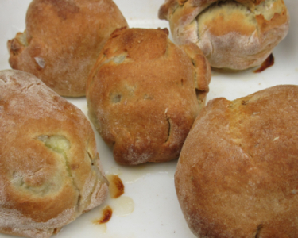

 Nou fait d'la pâte dé pâté et nou-s-enveloppe des pommes p'lées atout des pommes douoches pûtôt, mais ofûche des suthes étout. Nou-s-en met eune dgiexaine sus un pliat auve un gouttîn dg'ieau et les tchuit au fou.
Nou fait des bourdélots d'paithes étout tchiquefais. Et nou faisait l'temps pâssé des doubl'yes bourdélots qué nou-s-appelait des bourdélots jeunmieaux.
Eune Danmeplinne est difféthente à un bourdélot, étant tchuite à l'ieau et atout eune pomme suthe.
Viyiz étout: